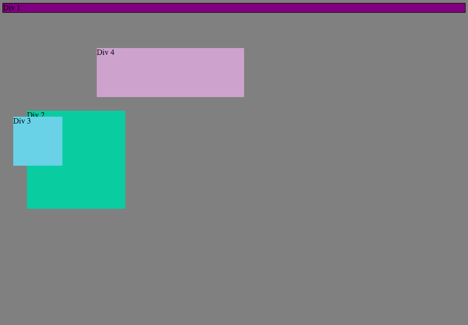

CSS Concepts - Positioning
This week I dove into CSS, a markup language used for styling websites made with HTML. For the most part it is a fun language that allows you to make gratifying changes to the look of your site. What I dedicated some extra time to though, is positioning within CSS.
There are four positioning options for CSS elements: static, fixed, relative, and absolute. By default, any CSS element you're working on is static. This means that the element defaults to wherever the HTML dictates that it is placed. You can use margin, padding, and other CSS placement variables to position it as you wish. Fixed positioning is similar, only the position of the element is relative to the browser window itself, not the actual website. So if you're scrolling up or down a page, a fixed element will stay put as the rest of the content moves.
The other two are a little more tricky. Relative positioning looks at where the element would be placed by default due to the order of the html. So if an element normally ends up halfway down a page underneath the preceding HTML section, changes in positioning are relative to where it would have otherwise been placed by default. CSS changes for an element with Absolute positioning, somewhat similarly, makes changes relative to another section. However, instead of the changes being relative to its otherwise static alternative, Absolute positioning makes the changes relative to the last positioned parent element. Or, relative to the preceding element that was not designated as static that it is nested within.
Check out this image for examples. Divs 1-4 are positioned as static, relative, absolute, and fixed respectively. Div 1 (static) has a margin-bottom of 200px, which is what has placed Div 2 (relative) at its lower position on the screen. If Div 2 were static, it would simply be snapped to the left side of the screen, and still follow Div 1's margin-bottom rule. But since it is relative, we are allowed to use offsets like top, right, left, and bottom to position it specifically. Div 3 (absolute) has no parent with an explicity stated position, so it's default position would be the top left of the screen. Offets top and left have placed it in its particular position. IF Div 1 were anything other than static, Div 2's position would change relative to Div 1. Div 4 (fixed) is placed with the top and left offsets, and would stay locked to the browser window if you were to scroll.
With responsive web becoming (being?) the standard for new website development, it's important to understand the relationship between different parts of the site, and how they will interact across different platforms. I'm hoping to hack my way through some positioning exercises to really understand how best to makes these positioning relationships work best for me and the sites I develop.